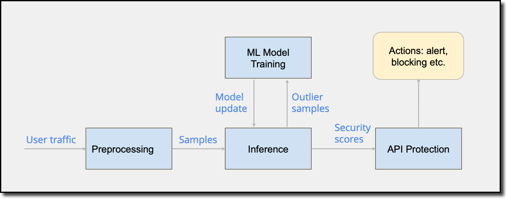

FortiWEB API Protection
FortiWeb secures API interfaces, whether they are implemented using XML, JSON API, or RESTful API. FortiWeb parses the contents of each call and applies WAF policy validation to protect the application from malicious traffic.
-
XML is commonly used for data exchange. Hackers sometimes try to exploit security holes in XML code to attack web servers.
-
JSON is a lightweight data-interchange format, Attackers may try to exploit sensitive information in JSON code to attack web servers.
-
OpenAPI Specification (OAS) defines a standard, language agnostic interface to RESTful APIs, which allows both humans and computers to discover and understand the capabilities of the service without access to source code, documentation, or through network traffic inspection. When properly defined, you can understand and interact with the remote service with a minimal amount of implementation logic. OpenAPI is becoming a popular tool and the de-facto standard how APIs are described.
-
API Gateway provides the following functions: API user management, API key verification, API access control, Rate limit control, API call rewriting.
-
Mobile API: Mobile devices are increasing being used for accessing web servers. These applications are increasing being attacked and need protection.
1.0 FortiWEB API Protection (Machine Learning)
With the release of FortiWEB v7.0, API Protection (Machine Learning) was released.
The machine learning based API Protection learns the REST API data structure from user traffic samples and then build a mathematical model to screen out malicious API requests.
It analyzes the method, URL, and endpoint data of the API request samples to generate an API data structure file for your application. This file describes the URL pattern and schema of endpoint data. If the incoming API request violates the data structure, it will be detected as an attack.
API Protection supports JSON request body or responses.
2.0 API Discovery
A successful REST API sample (request & response) must follow the server’s API specification
API discovery: restore the API specification from user traffic by profiling API samples. One key step in API discovery is to determine whether multiple API samples belong to the same API. The API discovery problem can be formulated as an unsupervised learning problem which can be solved by clustering algorithms.
We designed a new clustering algorithm, URL clustering with schema awareness, to solve the problem. The algorithm can be considered as a variant of the well-known leader clustering algorithm. Clustering is often used as a data analysis technique for discovering interesting patterns in data, such as grouping customers based on their behaviour.
2.1 API - 10 Dimensions examined
- URL distance
- Generalized Hamming distance for vectorized URLs
- Path parameters
- Schema of parameters in URL path
- Query parameters
- Schema of parameters appended to the URL.
- Header parameters
- Schema of parameters in custom headers
- Cookie parameters
- Schema of cookie values
- HTTP request body
- Schema of HTTP request body
- HTTP method
- Type of HTTP methods, eg., GET, SET, PUT, POST...
- Media type
- Type of media type, e.g., XML, JSON, etc.
- HTTP status code
- Only successful requests shall be used for model training
- HTTP response body
- Schema of response body
2.2 High Level Architecture and System Components
- Preprocessing module: extract user data schema, construct API samples
- Inference module: evaluate the API samples with pre-trained machine learning models, feed sample outliers to the model training module, generate security scores for API samples
- Model training module: train ML models using our API profiling algorithm and send updates to the inference module
- API protection module: determine following actions based on security scores and user API protection policies.
